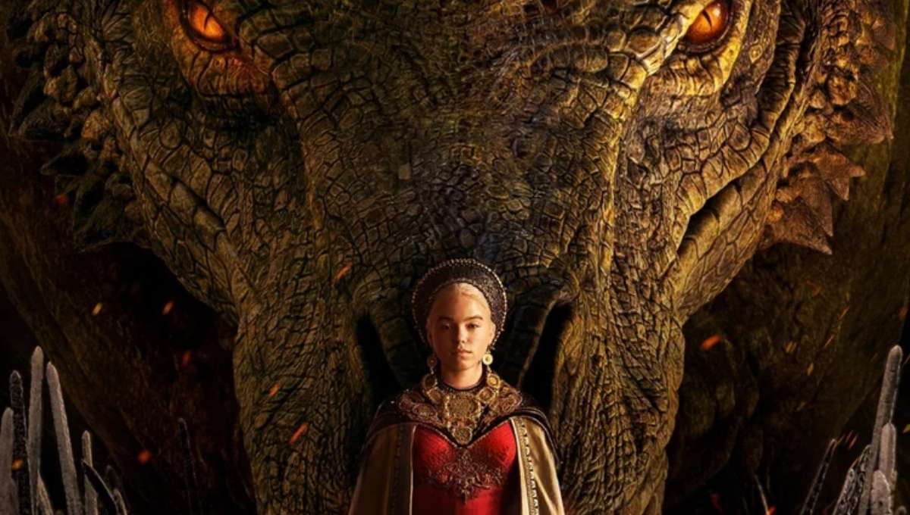
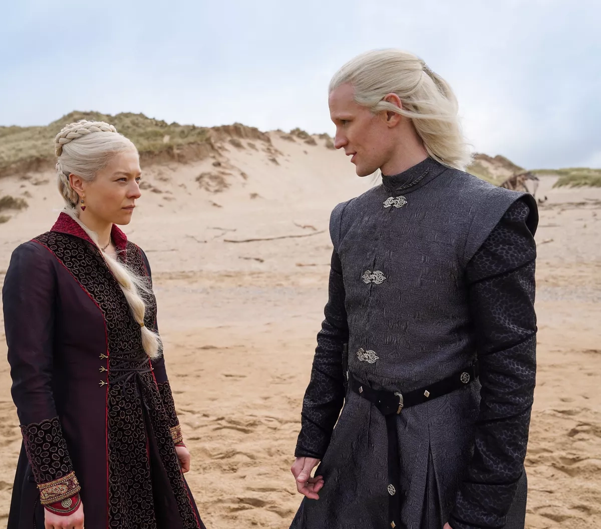
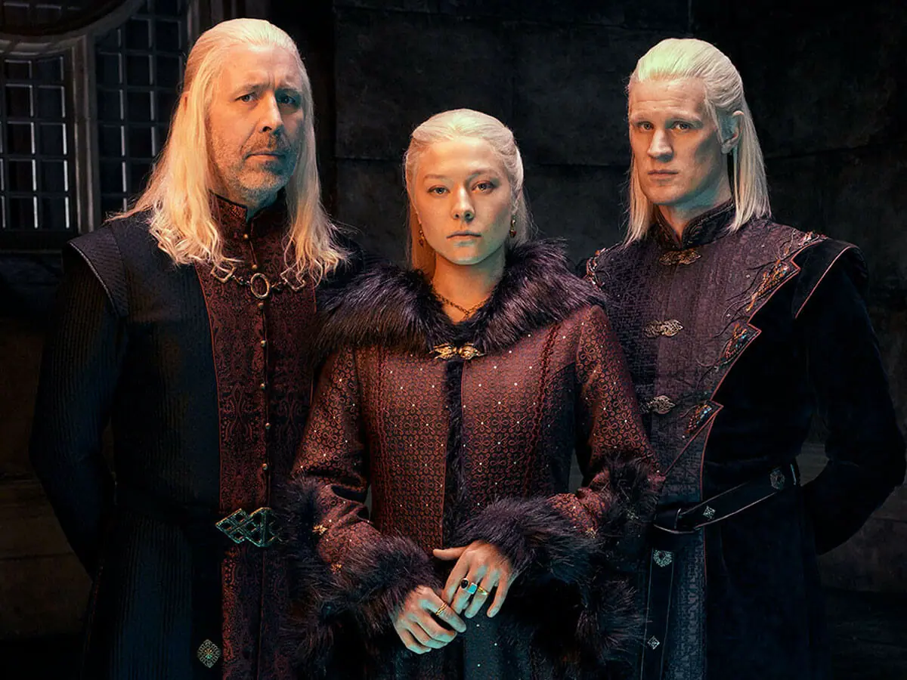
 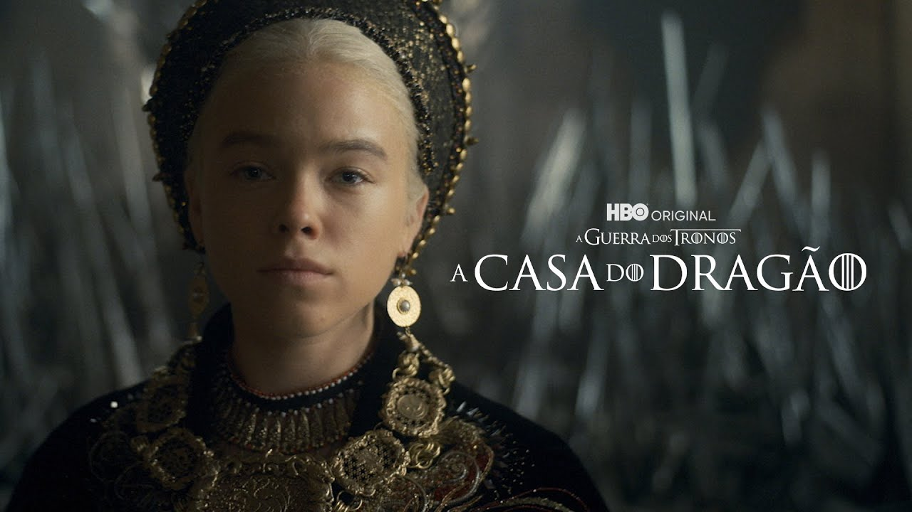
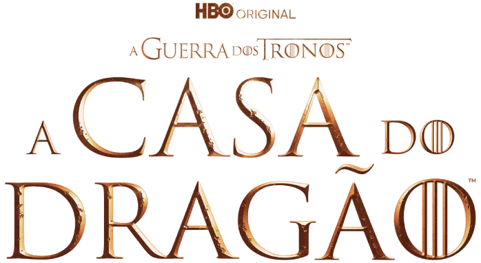
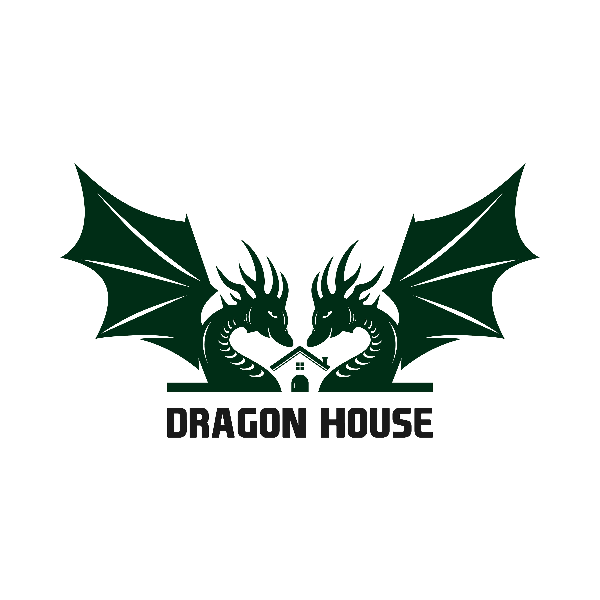
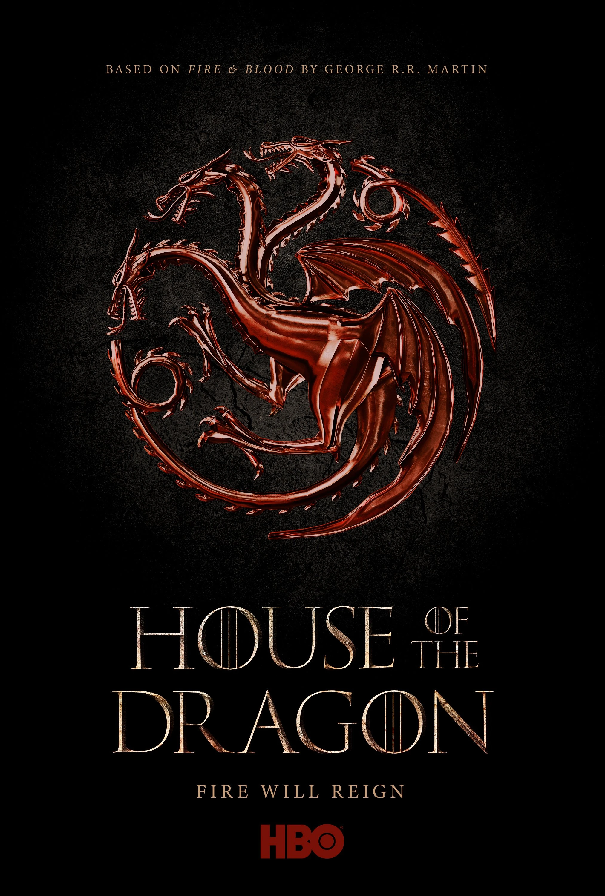
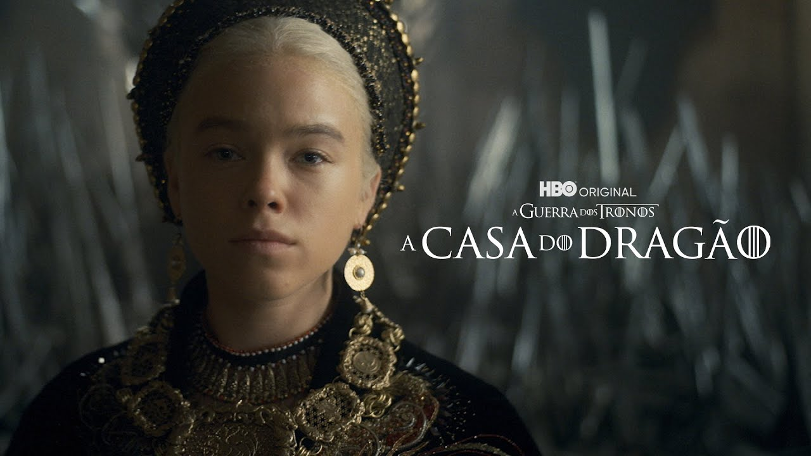
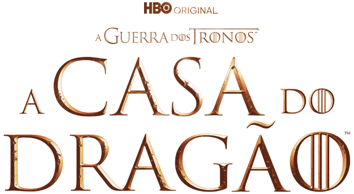
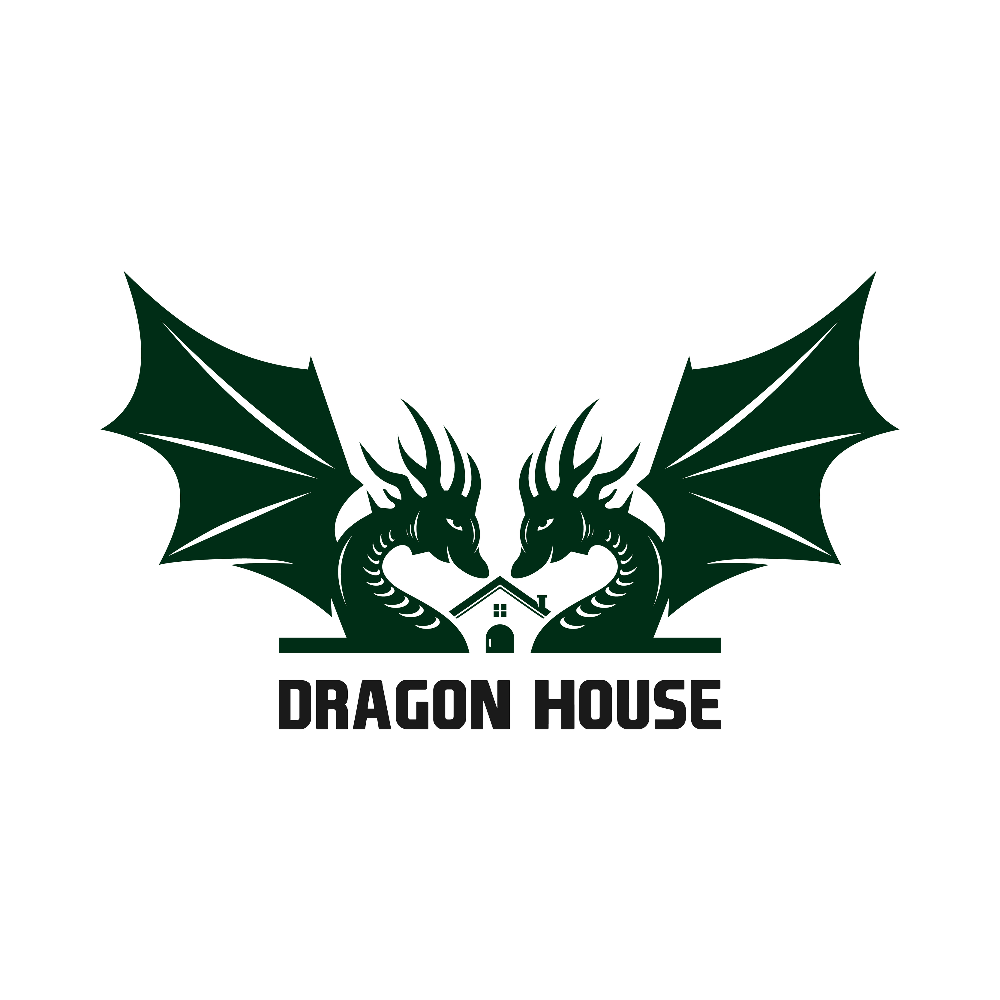
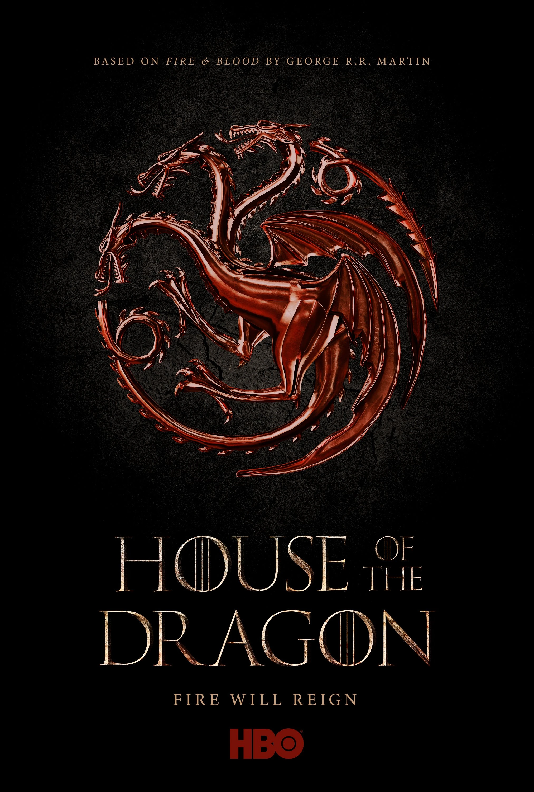
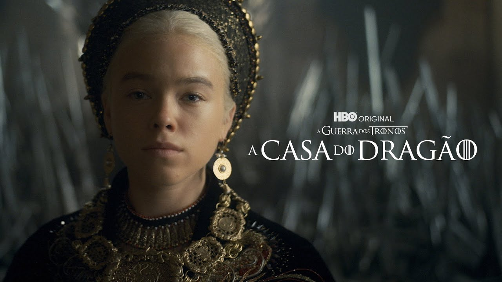
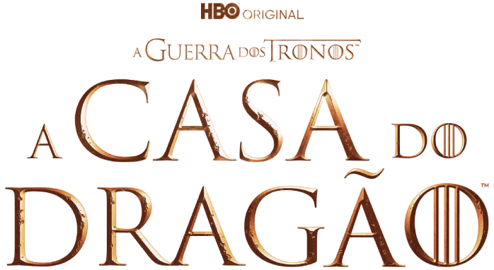
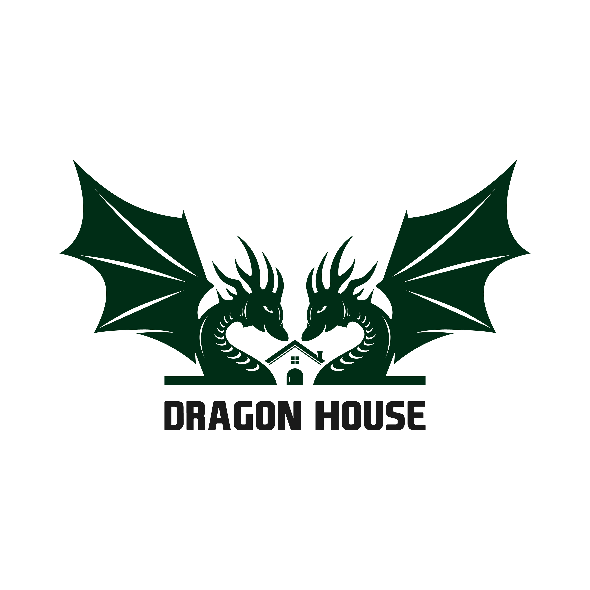
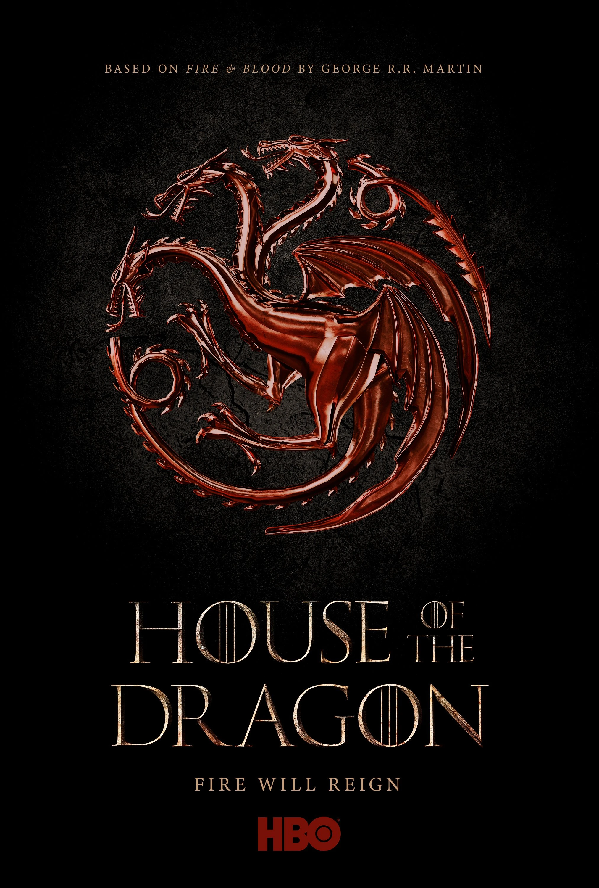
Situada cerca de 200 anos dos acontecimentos de Game of Thrones, A Casa do Dragão mostra um período em que Westeros é governada pelos Targaryen. Nesse contexto, dragões são mais comuns e o reino vive uma certa estabilidade sob o comando do rei Viserys I. Tudo muda, é claro, quando surge uma disputa pelo Trono de Ferro.